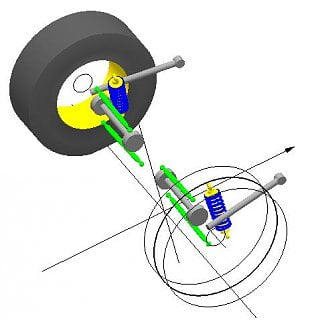
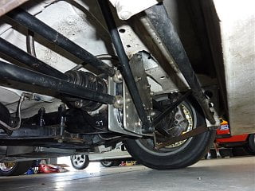

-
Using the original semi trailing arm suspension as a base, what modifications have racers done with what results? I have several mods in mind, including reducing the sweep angle and changing the height of the swing mounting points in relation to each other. For example, there is a British conversion for the STA suspension on their Ford Sierra's that reduces the sweep angle to just 6 degrees. Coilover advice would be good too but it's the above two serious mods which are of most interest. -
All I've done to ours so far is the camber mod, but we're pretty restricted on what we can do (both in the regs and skill set). I am looking at trying to raise the subframe/mustache bar as high as it will go in the chassis (pretty sure I can move it up another 5-6mm). Raising the diff mount might also help, but I want research/be cautious about pinion angle.
Curious about the Cozzy mods you speak of, I'm still learning about suspension setup. E30 BMWs also have a very similar rear suspension design.
I've seen heim swap kits (RT) and fancy camber mods on the trailing arms. Of course there is always the S-chassis subframe swap if rules/time/money/skill allow.________________
1987 Chumpcar -
Raising the entire suspension in relation to the car body is very important , I agree. No matter what suspension system is used it's crucial that it operate within it's design parameters when the car is lowered. Mine is going to be solid mounted which should allow some modding to the mounting points so it can be raised a fair bit.
There is very little around about sweep angles, the little that is shows that reducing them better enables the suspension to be set up to work within suitable camber and toe change limits. Yes, BMW did reduce sweep angle for racing, by how much I'm not sure. But I'm wondering about any disadvantages, one of the reasons for the topic, usually with suspension you don't in effect get something for nothing.
-
OK, for those interested in what the British have done with the 6* Ford STA search 'ahmed bayjoo sierra'. My notes say that M3's raced with 12* as a comparison. Personally I'm looking hard at the modded STA rear suspension used by the Group C Nissan Bluebird turbo race cars which seems doable to me, perhaps more so than a drastic sweep angle change which would require a jig to do properly. A Susprog representation of the Bluebird setup is pictured below. Note that the stock outer arms and attachment arrangement are retained with the inner arms removed. -
This is just way beyond what youll see with the in-and-out's knowledge here, and even beyond some of the senile old heads know of.
Like bremson said, i've gapped the diff for a straighter shaft angle, but there's so much going on with the junk rear end geometry these chassis run.
-
^^^ we had some good discussions back in 2014 when the site was popping
Discussion
https://z31performance.com/forum/z31…-measure-calcs
I measured the z31 sweep angle and plotted camber and toe curves, overall pretty close to what I validated -- getting the toe and camber measurements were easy, measuring the delta of height was a bit more difficult without making some jigs.
I will need to dig up the worksheets as they are a couple of computers ago. Long story short, I moved on to multilink system and have not looked back. Maybe if I get back into lowering one of my STA cars I will re-look.
86na - BlueZ
Shiro #366 - Kouki Monster
85t - Mr Tickles -
The 280ZX project I did used a S14 rear cradle which I agree is a good option, only problem was getting it high enough up into the body so that the suspension angles were still good when the car was lowered.
The Project Z31 will be a full on LS3 engined race car and as a challenge I've decided to work with what's there already, paying particular attention to getting the roll centre and dynamic toe and camber characteristics right. At present the Bluebird suspension mentioned in post #4 looks like the best solution, only problem with it is dynamic toe change but given the adjustability of the lateral links and their locations this should be able to be worked around. Pic of the Bluebird suspension.

Copyright © 2006–. All rights reserved. Privacy Policy